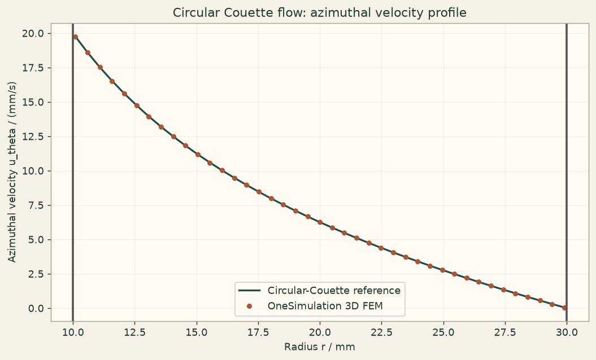

Docs › Examples › Taylor-Couette flow
Fluid flow · 3D
Taylor-Couette flow
Circular Couette flow between a rotating inner and a fixed outer cylinder, graded against the exact profile.

What it computes
OneSimulation solves the steady incompressible Navier-Stokes equations in an annulus with a rotating inner wall, using a mixed Taylor-Hood element on a curved mesh.
What it checks
The azimuthal velocity matches u_theta(r) = A r + B/r within about 0.06 % of the wall speed.
The notebook
The complete notebook, cell by cell. Run it to produce the figures and the comparison printout.
An incompressible Newtonian fluid fills the annular gap between two concentric cylinders of radii \(a\) (inner) and \(b\) (outer). The inner cylinder rotates at a constant angular velocity \(\Omega\) while the outer cylinder is held fixed. At low Reynolds number the steady flow is purely azimuthal, \(u=u_\theta(r)\,\hat{e}_\theta\), and the Navier-Stokes equations reduce to the equidimensional balance
OneSimulation solves the full 3D stationary Navier-Stokes system \(\rho(u\cdot\nabla)u=-\nabla p+\mu\nabla^2 u\) with inf-sup stable Taylor-Hood finite elements (quadratic velocity, linear pressure) and a Newton solver. The curved inner and outer walls are resolved with quadratic (isoparametric) cells.
Reference. Integrating the balance gives the circular-Couette profile
We check the computed azimuthal velocity along a radial cut against this profile.
from importlib.metadata import version
import numpy as np
import matplotlib.pyplot as plt
from onesim.cad.d3 import AnnularCylinder
from onesim.materials import NewtonianFluid
from onesim.meshing import TetrahedralMesher
from onesim.numerics import Numerics
from onesim.numerics.fem import FiniteElement, TaylorHood
from onesim.numerics.linear import SparseDirect
from onesim.numerics.nonlinear import Newton
from onesim.physics.hydrodynamics import FixedVelocity, IncompressibleNavierStokes, NoSlipWall
from onesim.simulation import Problem, Simulation
from onesim.simulation.field_constraints import MeanValue
from onesim.simulation.initial_conditions.values import InitialValue
print("OneSimulation:", version("onesimulation"))Parameters
The cylinder axis lies along \(z\) (the AnnularCylinder axis). The flow is purely azimuthal and independent of \(z\). The inner cylinder rotation sets the velocity scale; the unit density keeps the flow in the creeping regime where the \(A r + B/r\) profile is the exact Navier-Stokes solution.
a = 0.010 # m, inner radius (rotating cylinder)
b = 0.030 # m, outer radius (fixed cylinder)
H = 0.010 # m, axial height (flow is independent of z)
mu = 1.0e-3 # Pa·s, dynamic viscosity
rho = 1.0 # kg/m^3, density (unit value: the inertial term vanishes here)
omega = 2.0 # rad/s, angular velocity of the inner cylinder
A = -omega * a**2 / (b**2 - a**2)
B = omega * a**2 * b**2 / (b**2 - a**2)
u_wall = omega * a # m/s, tangential speed of the inner wall
reynolds = rho * u_wall * (b - a) / mu
print(f"Omega = {omega:.3f} rad/s, inner wall speed = {u_wall:.4f} m/s, Re = {reynolds:.2f} (creeping)")
print(f"Profile coefficients: A = {A:.5f} 1/s, B = {B:.3e} m^2/s")Model
The inner wall rotates rigidly at \(\Omega\), so its velocity is \(\Omega\times r = \Omega(-y, x, 0)\) (a callable FixedVelocity). The outer wall is a no-slip (fixed) wall. The top and bottom carry the analytic azimuthal trace, which keeps the flow axisymmetric and independent of \(z\), so every one of the four boundary faces has an explicit condition.
geometry = AnnularCylinder(inner_radius=a, outer_radius=b, length=H)
mesh = TetrahedralMesher(target_size=(b - a) / 10.0, geometry_order=2).generate(geometry)
print("Mesh:", mesh.cell_count, "quadratic tetrahedra")
fluid = NewtonianFluid(density=rho, dynamic_viscosity=mu)
def inner_rotation(x, y):
# Rigid-body rotation of the inner cylinder: u = Omega x r = Omega (-y, x, 0).
return np.column_stack((-omega * y, omega * x, np.zeros_like(x)))
def azimuthal_profile(x, y):
# Analytic circular-Couette trace u_theta(r) = A r + B/r, written in Cartesian
# components. The azimuthal unit vector at (x, y) is (-y, x)/r, so
# u = (A + B/r^2) (-y, x, 0).
factor = A + B / (x**2 + y**2)
return np.column_stack((-factor * y, factor * x, np.zeros_like(x)))
model = IncompressibleNavierStokes(domain=geometry.volume, material=fluid)
problem = Problem(
name="Circular Couette flow",
geometry=geometry,
physics=(model,),
boundary_conditions=(
FixedVelocity(boundary=geometry.boundaries.inner_wall, physics=model, value=inner_rotation),
NoSlipWall(boundary=geometry.boundaries.outer_wall, physics=model),
FixedVelocity(boundary=geometry.boundaries.top | geometry.boundaries.bottom,
physics=model, value=azimuthal_profile),
),
constraints=(MeanValue(model.pressure, 0.0),),
initial_conditions=(InitialValue(model.velocity, (0.0, 0.0, 0.0)),),
)
simulation = Simulation(
problem=problem,
mesh=mesh,
numerics=Numerics(
spatial=FiniteElement(element=TaylorHood()),
nonlinear_solver=Newton(
linear_solver=SparseDirect(), absolute_tolerance=1e-12, relative_tolerance=0.0,
),
initial_guess={model.velocity: (0.0, 0.0, 0.0)},
),
)
result = simulation.solve_stationary()Comparison with the circular-Couette profile
We sample the velocity along a radial line on the x axis at mid-height. There the radial direction is x and the azimuthal direction is y, so the azimuthal velocity is the y component. We compare it with the closed-form \(A r + B/r\). The ends are slightly inset to avoid evaluating exactly on the curved boundary.
r = np.linspace(a + 1e-4, b - 1e-4, 41)
pts = np.column_stack((r, np.zeros_like(r), np.full_like(r, H / 2.0)))
u_vec = np.asarray(result.field(model.velocity).evaluate(pts))
u_theta_numeric = u_vec[:, 1] # azimuthal = y component on the x axis
u_radial_numeric = u_vec[:, 0] # radial = x component (should vanish)
u_theta_exact = A * r + B / r
u_scale = u_wall
max_abs_error = float(np.max(np.abs(u_theta_numeric - u_theta_exact)))
rel_error = max_abs_error / u_scale
max_radial = float(np.max(np.abs(u_radial_numeric)))
print(f"Inner wall velocity: FEM {u_theta_numeric[0]:.5f} m/s, reference {A*a+B/a:.5f} m/s")
print(f"Maximum absolute azimuthal error: {max_abs_error:.3e} m/s ({100*rel_error:.2f} % of inner wall speed)")
print(f"Maximum spurious radial velocity: {max_radial:.3e} m/s ({100*max_radial/u_scale:.2f} % of inner wall speed)")Figure
cream = "#fbf5eb"
fig, ax = plt.subplots(figsize=(8, 4.8), constrained_layout=True)
fig.patch.set_facecolor(cream)
ax.set_facecolor("#fffaf2")
ax.grid(alpha=0.25)
ax.plot(r * 1000, u_theta_exact * 1000, color="#214D43", lw=1.8, label="Circular-Couette reference")
ax.plot(r * 1000, u_theta_numeric * 1000, "o", color="#A85539", ms=4, label="OneSimulation 3D FEM")
ax.axvline(a * 1000, color="#555", lw=2)
ax.axvline(b * 1000, color="#555", lw=2)
ax.set(xlabel="Radius r / mm", ylabel="Azimuthal velocity u_theta / (mm/s)",
title="Circular Couette flow: azimuthal velocity profile")
ax.legend()
plt.show()Going further
Rotate the outer cylinder as well and recover the general two-parameter profile, or push the inner rotation up until the Reynolds number leaves the creeping regime, where Taylor vortices would eventually break the purely azimuthal flow. Refine the mesh or raise the element order and watch the profile error shrink as the curved walls and the 1/r term are resolved more accurately.